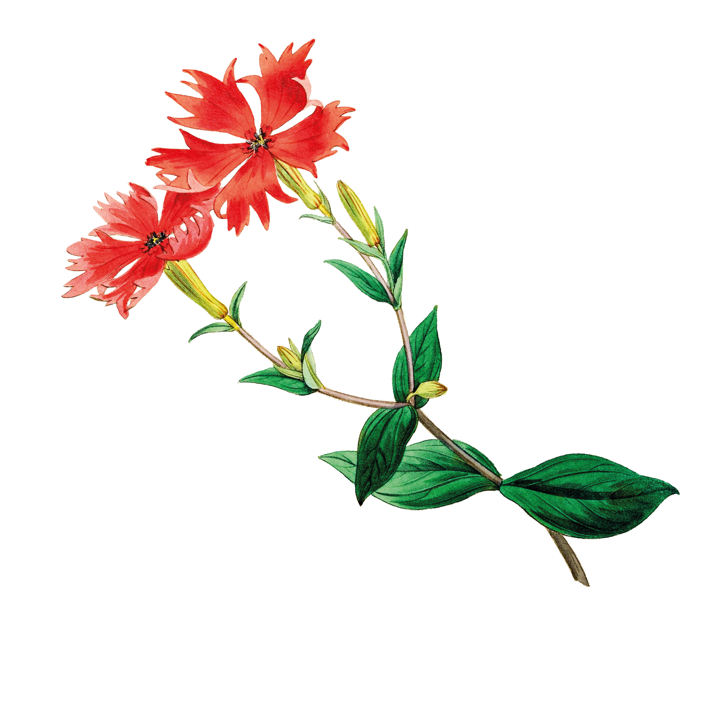
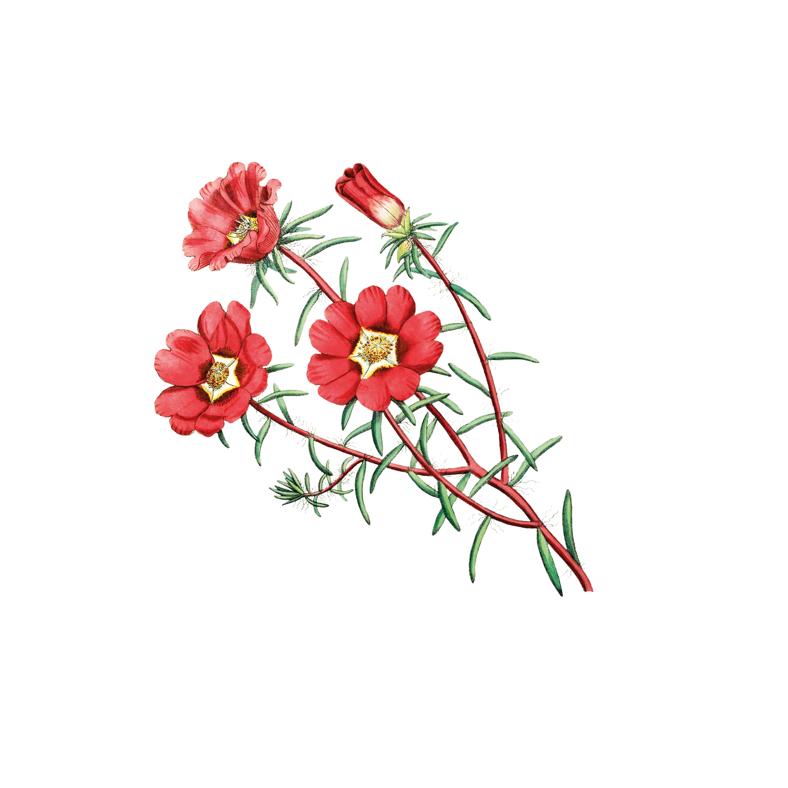
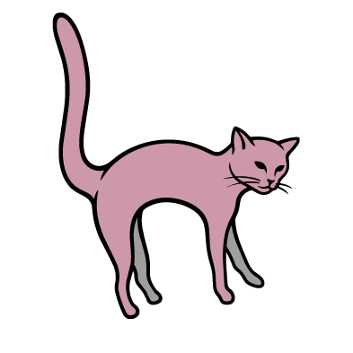
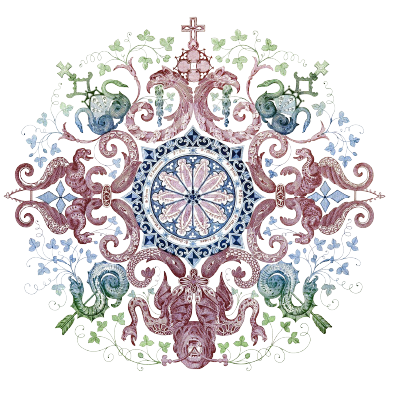

PUBLISHES WHENEVER WE FEEL LIKE IT
No offence to all the batches above us, this is just a light-hearted article on what I feel and just comment on them because I can, and this is my newspaper so... let's start that! It's almost been a week since we all got back from our summer break, and I realised we're the last batch of this program. We've got web design for a few weeks and this is actually what I'm working for right now.
Before I start this article, I'll introduce the ones I'll be talking about. So we're a batch of seven people, and that's it. How weird right? But trust me, we're a handful. We're seven different individuals, who got the chance to be in one class together. Let me formally introduce them now. There's me ofcourse, then there's Aditi Sharma, Rushikesh Hande, Darshan Pathak, Sanskar Shendge, Ashish Gajjar and Prakhar Pandey.
I welcome you readers into our design studio. Let's take a sneak peek on what goes around. Again, this is my interpretation of everything so it'll be slightly sarcastic and kinda funny. When you'll enter our studio, you'll observe one thing. When everyones working, no one even bats an eye to each other. But when we're taking a break, it's like all hell breaks loose. The girls are in deep conversation about everything, and the boys are either playing cricket or playing some songs loudly and sketching in their own world. It's a chaos honestly, but it just shows how we've adapted to it, and made our own comfort zones. Anchita (me) will be usually writing random stuff on the white-board, while the boys will erase it and draw their own doodles. Aditi will either be watching her current series or trying to figure out how to eat her snack while being inside the class, and actually manage to succeed at it. Kudos to her! Meanwhile we'll just be waiting for her to give us a piece too haha.
Here's a sneak peek at Studio Seven. It's more than just the name of our batch. It's different personalities, perspectives, and practices brought together by Communication Design.
Let me think about the things new with our class...Ooh! We've all shifted to the new studio, the one we were waiting to sit in for so long, turns out our studio got renovated, and its got the one amenity we wanted...an AC! So no one really understands how happy we feel after entering a room that has AC.
We already know who it is..It is our very dear Miss Aditi Sharma!! Who better to be our critic than someone's who's direct, speaks her mind and always wants best results, in every aspect of her life or our work. Thanks for that Aditi, it's helped!!
The "chupa rustom" of the group. Talks less, jokes around more and asks very specific questions. But when it's time to see everyone's work, he's always got something amazing hidden up his sleeve.This is none other than Mr Rushikesh Hande.
This one was a close call between two students, because both of their desks have been decorated the best. Any guesses on who it is??

Yep you guessed it everyone, it's none other than Mr Darshan Pathak! I think we can all agree when we say that his desk has seen the most unique and random things (in the best way) one could ever imagine. A pebble? A stem inside a terracotta pot? He's got everything you could ever imagine.This is not meant to mock them in any way, but I guess we all have something to learn from him. He's always confident in his own skills and never takes any stress on whether or not it'll be late.He's always figured things out and I guess we can all call him a "jugaadu" Thats right, it's none other than Mr Sanskar Shendge!
Every project started with a plan and usually ended with a sprint. We learned that deadlines have a strange way of bringing everyone together.

Late nights, endless revisions, & countless exports became the routine. Someone always had snacks,new ideas and also had the answers. Somehow, things always came together in the end & one year passed by
I guess if I have to give myself an award, I'd give it for being the most insane person in the group. Like, unhinged. I don't mean to insult myself but I think it's a good quality in general.
